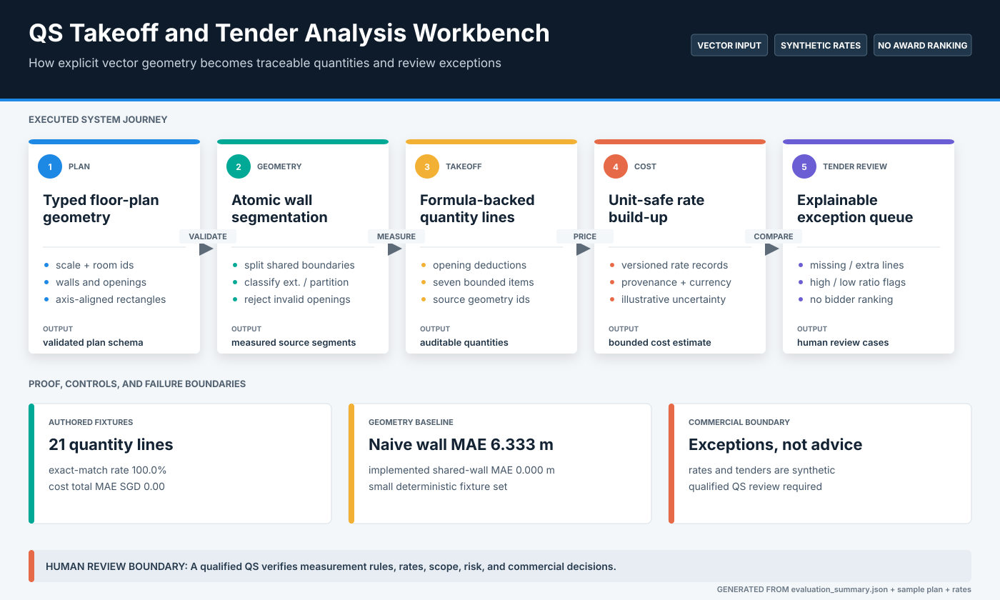
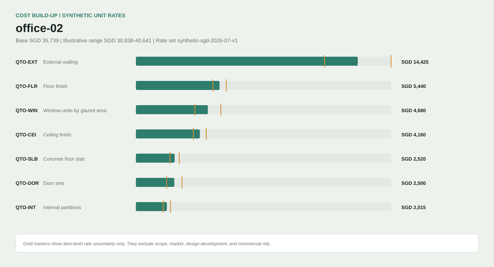
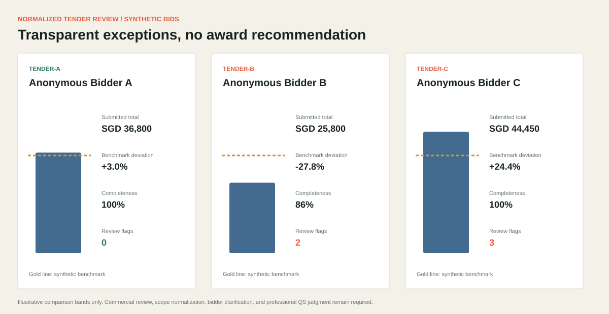

Quantity and tender review becomes difficult to audit when geometry assumptions, measurement formulas, rates, and exceptions lose their provenance.
Selected case study / QS automation
QS Takeoff and Tender Analysis Workbench
An auditable calculation path from explicit geometry to commercial review exceptions.
Validated vector fixtures become traceable quantity lines, versioned synthetic rates, bounded cost ranges, and line-level tender flags. Every formula, source geometry ID, and exclusion remains inspectable.
Actual local interface / synthetic plans, rates, and tenders
Validated vector geometry, atomic edge classification, opening deductions, seven measured items, rate joins, uncertainty bands, and tender review flags.
Three hand-calculated synthetic plans, 21 quantity lines, seven synthetic rates, three tenders, and five authored exceptions.
No PDF, CAD, BIM, or IFC ingestion; no market pricing, bill of quantities, professional QS output, or award recommendation.
System
Geometry is validated before anything is priced
The workbench rejects invalid rooms, overlaps, openings away from walls, missing rates, and unit or currency mismatches. Only accepted geometry can produce measured quantities and a commercial review queue.

Measured behavior
Shared-wall classification fixes a visible baseline error
The deterministic fixtures are deliberately small enough to calculate by hand. Perfect matches show formula regression correctness inside the supported schema, not arbitrary drawing interpretation or pricing accuracy.


Engineering decisions
Commercial outputs retain their calculation trail
The implementation emphasizes rejectable contracts and line-level provenance rather than presenting a screenshot as evidence of automated estimating.
Typed geometry contract
Scale, room rectangles, openings, IDs, and adjacency enter through a schema that rejects overlap and unsupported placement.
Atomic edge measurement
Collinear edges are split and classified so adjoining rooms share one partition instead of duplicating their full perimeters.
Dual provenance
Each cost line carries both source geometry references and a versioned synthetic rate source with unit validation.
Review, not recommendation
Missing, unusually low, unusually high, and extra items are surfaced for clarification without bidder scoring or award logic.
Retained limitation
Exact fixture results do not establish drawing understanding.
The workbench consumes a narrow rectangular JSON schema and synthetic rate library. It cannot interpret drawings, reconcile revisions, apply a standard method of measurement, calibrate market prices, or replace qualified commercial review.
Inspect limitations and human-review boundaryRun locally
Rebuild quantities, costs, and tender flags
The evaluator replays all three plans and tenders, compares shared-wall measurement against the naive baseline, and rewrites the machine-readable and visual evidence.
python projects/qs-takeoff-tender-analysis/evaluate_qs.py
python -m pytest tests/test_qs_takeoff_tender_analysis.py
streamlit run projects/qs-takeoff-tender-analysis/app.py